TZION
My photos
 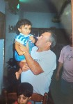
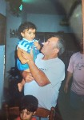
 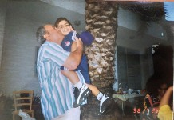
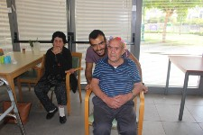
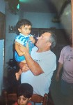
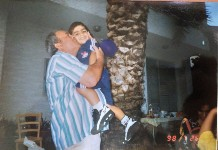
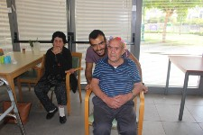
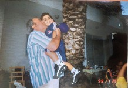
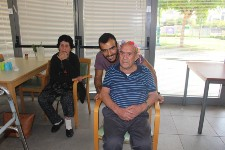
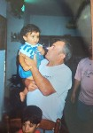
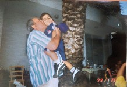
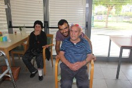
1. Web 1 - Reading option for superficial data for the world wide web. Is not dynamic, there is almost no connection between website and user. The user cannot respond to the different configurations.
Web 2 - The possibility of writing interactive data on the world wide web. Creating and sharing content uploaded to the web by surfers themselves as opposed to web 1. Encourages active sharing and information sharing - Ability to comment, participate, create (Youtube, Wiki, Flickr, Facebook and so on).
Web 3 - Possibility of running varying applications, possibility of machine to machine on the world wide web. It is dynamic and depends on what each user does, different for each user (a smart website that studies user behavior).
2. Web 1 - All control of the site by the company, the user can see only what they want. The user needs to know the URL, and in order to know about side effects he has to first find the pharmaceutical company phone number and then call them to find out.
Web 2 - Very convenient and orderly, the user can search the drug on the site and find its side effects after the search.
Web 3- Only after several searches of its drug name and side effects will it find a website that will provide side effects. Once logged in, he will find out about side effects.